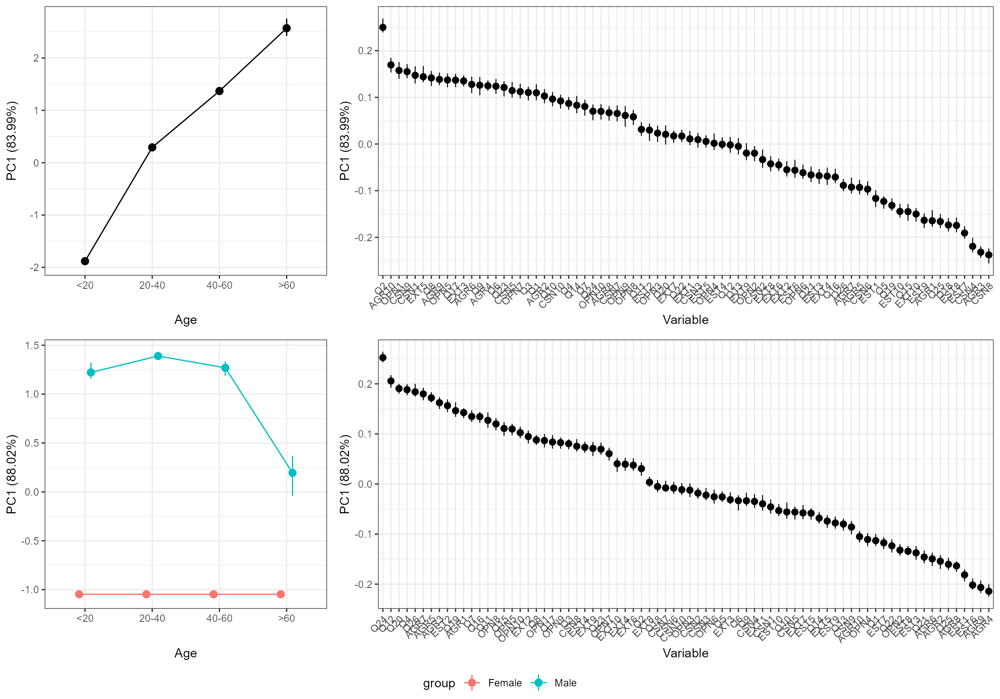
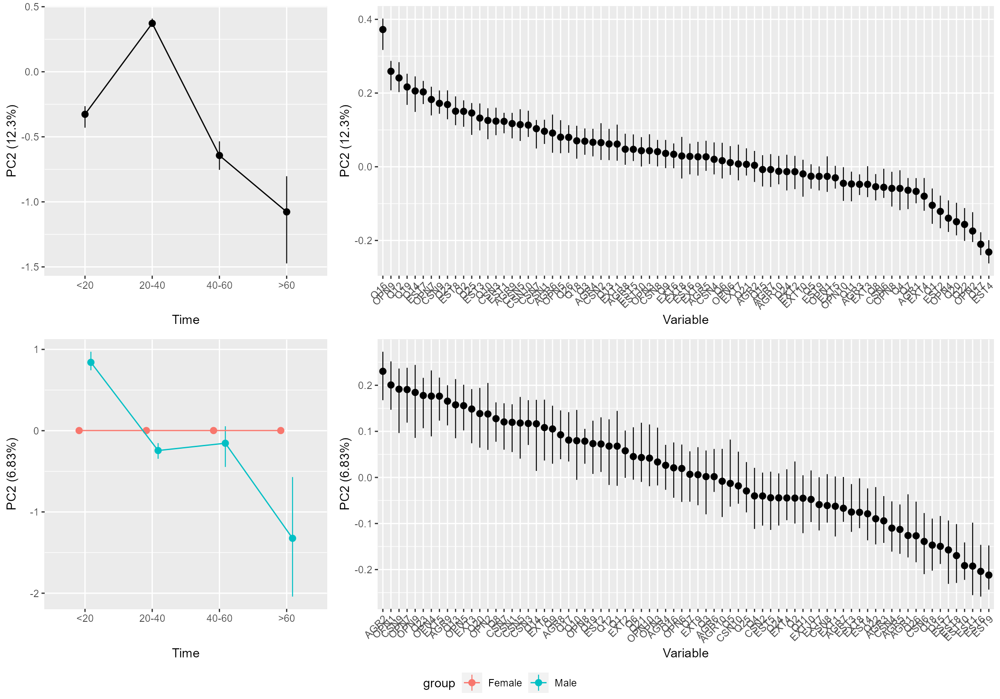
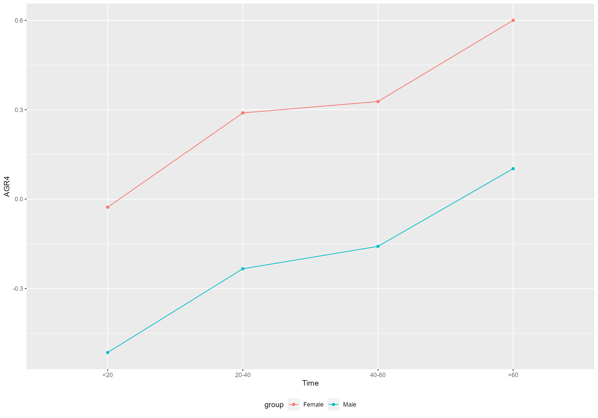

personality.Rmd
library("reshape2")
library("ALASCA")This is a demonstration of single measures data analyzed with ALASCA(), with personality data explored with focus on age and gender. You may also be interested in
We will use the Development of the Firstborn Personality Scale data from the Open-Source Psychometrics Project. It is quite large, so we will restrict ourself to participants from Great Britain (to speed up things). Let us import and prepare the data:
df <- read.csv(file = "personality.csv", header = TRUE, sep = ";")
df$ID <- 1:nrow(df)
df <- melt(df, id.vars = c("ID","age", "engnat", "gender", "birthpos", "birthn", "submittime", "country", "dateload", "source", "screensize", "introelapse", "testelapse", "endelapse"))
df <- subset(df, country == "GB")
# Notice that time is actually age spans
df$time <- ifelse(df$age < 20, "<20",
ifelse(df$age < 40, "20-40",
ifelse(df$age < 60, "40-60", ">60")))
df$time <- factor(df$time, levels = c("<20", "20-40", "40-60", ">60"))
df$group <- ifelse(df$gender == 1, "Male", ifelse(df$gender == 2, "Female", NA))
df <- subset(df, !is.na(group))
head(df)
#> ID age engnat gender birthpos birthn submittime country
#> 72 72 36 1 2 1 3 12.04.2019 12:37 GB
#> 98 98 20 1 1 3 3 12.04.2019 13:17 GB
#> 128 128 35 2 2 2 2 12.04.2019 14:11 GB
#> 147 147 20 1 2 1 2 12.04.2019 14:44 GB
#> 157 157 56 2 2 3 4 12.04.2019 14:56 GB
#> 208 208 21 2 2 2 2 12.04.2019 17:15 GB
#> dateload source screensize introelapse testelapse endelapse
#> 72 12.04.2019 12:31 1 1 37 181 12
#> 98 12.04.2019 13:09 2 1 4 237 6
#> 128 12.04.2019 14:01 0 1 6 314 19
#> 147 12.04.2019 14:28 0 2 38 752 7
#> 157 12.04.2019 14:44 0 2 3 438 22
#> 208 12.04.2019 16:50 0 1 15 1212 11
#> variable value time group
#> 72 Q1 4 20-40 Female
#> 98 Q1 2 20-40 Male
#> 128 Q1 4 20-40 Female
#> 147 Q1 4 20-40 Female
#> 157 Q1 1 40-60 Female
#> 208 Q1 5 20-40 FemaleNote that the question text itself is kept in another variable for the time being,
df.q <- read.csv(file = "personality_q.csv", header = TRUE, sep = ";")
colnames(df.q) <- c("code", "question") # to get rid of ï..
head(df.q)
#> code question
#> 1 EXT1 I am the life of the party.
#> 2 EXT2 I don't talk a lot.
#> 3 EXT3 I feel comfortable around people.
#> 4 EXT4 I keep in the background.
#> 5 EXT5 I start conversations.
#> 6 EXT6 I have little to say.Applying ALASCA() is quite straightforward. If we omit the random effect from our regression model, ALASCA will automatically select linear models.
model.formula <- value ~ time*group
mod <- ALASCA(df, model.formula, validate = TRUE, participantColumn = "ID")
#> Will use linear models!
#> Scaling data...
#> Calculating LM coefficients...
#> Finished calculating regression coefficients!
#> Calculating effect matrix
#> Finished calculating effect matrix!
#> Running validation...
#> - Run 1 of 50
#> --- Used 1.81 seconds. Est. time remaining: 88.88 seconds
#> - Run 2 of 50
#> --- Used 2.31 seconds. Est. time remaining: 98.86 seconds
#> - Run 3 of 50
#> --- Used 1.74 seconds. Est. time remaining: 91.72 seconds
#> - Run 4 of 50
#> --- Used 1.75 seconds. Est. time remaining: 87.41 seconds
#> - Run 5 of 50
#> --- Used 1.84 seconds. Est. time remaining: 84.99 seconds
#> - Run 6 of 50
#> --- Used 1.97 seconds. Est. time remaining: 83.7 seconds
#> - Run 7 of 50
#> --- Used 1.95 seconds. Est. time remaining: 82.09 seconds
#> - Run 8 of 50
#> --- Used 2.08 seconds. Est. time remaining: 81.1 seconds
#> - Run 9 of 50
#> --- Used 2.08 seconds. Est. time remaining: 79.85 seconds
#> - Run 10 of 50
#> --- Used 2.22 seconds. Est. time remaining: 78.99 seconds
#> - Run 11 of 50
#> --- Used 2.16 seconds. Est. time remaining: 77.68 seconds
#> - Run 12 of 50
#> --- Used 2.25 seconds. Est. time remaining: 76.52 seconds
#> - Run 13 of 50
#> --- Used 2.03 seconds. Est. time remaining: 74.55 seconds
#> - Run 14 of 50
#> --- Used 2.1 seconds. Est. time remaining: 72.75 seconds
#> - Run 15 of 50
#> --- Used 2.07 seconds. Est. time remaining: 70.84 seconds
#> - Run 16 of 50
#> --- Used 2.05 seconds. Est. time remaining: 68.87 seconds
#> - Run 17 of 50
#> --- Used 1.83 seconds. Est. time remaining: 66.47 seconds
#> - Run 18 of 50
#> --- Used 1.8 seconds. Est. time remaining: 64.08 seconds
#> - Run 19 of 50
#> --- Used 1.75 seconds. Est. time remaining: 61.67 seconds
#> - Run 20 of 50
#> --- Used 1.86 seconds. Est. time remaining: 59.5 seconds
#> - Run 21 of 50
#> --- Used 2.09 seconds. Est. time remaining: 57.67 seconds
#> - Run 22 of 50
#> --- Used 1.99 seconds. Est. time remaining: 55.68 seconds
#> - Run 23 of 50
#> --- Used 2.03 seconds. Est. time remaining: 53.74 seconds
#> - Run 24 of 50
#> --- Used 2.54 seconds. Est. time remaining: 52.34 seconds
#> - Run 25 of 50
#> --- Used 1.91 seconds. Est. time remaining: 50.23 seconds
#> - Run 26 of 50
#> --- Used 2.24 seconds. Est. time remaining: 48.43 seconds
#> - Run 27 of 50
#> --- Used 2.53 seconds. Est. time remaining: 46.85 seconds
#> - Run 28 of 50
#> --- Used 1.88 seconds. Est. time remaining: 44.69 seconds
#> - Run 29 of 50
#> --- Used 1.98 seconds. Est. time remaining: 42.62 seconds
#> - Run 30 of 50
#> --- Used 2.09 seconds. Est. time remaining: 40.63 seconds
#> - Run 31 of 50
#> --- Used 1.96 seconds. Est. time remaining: 38.55 seconds
#> - Run 32 of 50
#> --- Used 1.92 seconds. Est. time remaining: 36.46 seconds
#> - Run 33 of 50
#> --- Used 1.81 seconds. Est. time remaining: 34.32 seconds
#> - Run 34 of 50
#> --- Used 1.88 seconds. Est. time remaining: 32.24 seconds
#> - Run 35 of 50
#> --- Used 1.85 seconds. Est. time remaining: 30.16 seconds
#> - Run 36 of 50
#> --- Used 1.81 seconds. Est. time remaining: 28.07 seconds
#> - Run 37 of 50
#> --- Used 1.76 seconds. Est. time remaining: 25.98 seconds
#> - Run 38 of 50
#> --- Used 1.78 seconds. Est. time remaining: 23.91 seconds
#> - Run 39 of 50
#> --- Used 1.74 seconds. Est. time remaining: 21.84 seconds
#> - Run 40 of 50
#> --- Used 1.77 seconds. Est. time remaining: 19.8 seconds
#> - Run 41 of 50
#> --- Used 1.88 seconds. Est. time remaining: 17.8 seconds
#> - Run 42 of 50
#> --- Used 1.95 seconds. Est. time remaining: 15.82 seconds
#> - Run 43 of 50
#> --- Used 1.96 seconds. Est. time remaining: 13.84 seconds
#> - Run 44 of 50
#> --- Used 1.96 seconds. Est. time remaining: 11.86 seconds
#> - Run 45 of 50
#> --- Used 1.8 seconds. Est. time remaining: 9.86 seconds
#> - Run 46 of 50
#> --- Used 1.95 seconds. Est. time remaining: 7.89 seconds
#> - Run 47 of 50
#> --- Used 1.86 seconds. Est. time remaining: 5.91 seconds
#> - Run 48 of 50
#> --- Used 1.73 seconds. Est. time remaining: 3.93 seconds
#> - Run 49 of 50
#> --- Used 1.67 seconds. Est. time remaining: 1.96 seconds
#> - Run 50 of 50
#> --- Used 1.69 seconds. Est. time remaining: 0 seconds
plot(mod)
plot(mod, component = 2)
We can see that women (reference group) has an increasing trend of something. Let us see for which questions their score is increasing and decreasing with age:
l_PC1 <- subset(getLoadings(mod)$time, PC == 1) # Get PC1 for time effect
l_PC1 <- merge(l_PC1, df.q, by.x = "covars", by.y = "code", all.x = TRUE) # attach question
l_PC1 <- l_PC1[order(l_PC1$loading, decreasing = TRUE),] # Order them after loading
knitr::kable(l_PC1[1:10, c("loading","question")])| loading | question | |
|---|---|---|
| 62 | 0.2499614 | I have traveled alone in a foreign country. |
| 2 | 0.1696101 | I make people feel at ease. |
| 41 | 0.1576493 | I have a rich vocabulary. |
| 20 | 0.1550006 | I follow a schedule. |
| 11 | 0.1472809 | I am always prepared. |
| 36 | 0.1441014 | I start conversations. |
| 75 | 0.1415864 | I have a rich vocabulary. |
| 10 | 0.1384822 | I feel others’ emotions. |
| 46 | 0.1372529 | I have excellent ideas. |
| 59 | 0.1367973 | I would want a dog that bit me put down. |
And in the other end (in this case, older women score lower on these items):
l_PC1 <- l_PC1[order(l_PC1$loading, decreasing = FALSE),] # Order them after loading
knitr::kable(l_PC1[1:10, c("loading","question")])| loading | question | |
|---|---|---|
| 19 | -0.2376010 | I shirk my duties. |
| 4 | -0.2318434 | I insult people. |
| 15 | -0.2192750 | I make a mess of things. |
| 28 | -0.1907806 | I change my mood a lot. |
| 29 | -0.1745142 | I have frequent mood swings. |
| 60 | -0.1735805 | I miss my childhood. |
| 68 | -0.1661132 | I sometimes ruin my jokes by laughing in the middle of them. |
| 1 | -0.1644788 | I feel little concern for others. |
| 30 | -0.1634739 | I get irritated easily. |
| 32 | -0.1501188 | I am quiet around strangers. |
Which features distinguish men from the women? From the plots above, it seems that PC1 indicates a stable difference that do not vary much with age; we do as above; men score higher on these items:
l_PC1 <- subset(getLoadings(mod)$group, PC == 1) # Get PC1 for time effect
l_PC1 <- merge(l_PC1, df.q, by.x = "covars", by.y = "code", all.x = TRUE) # attach question
l_PC1 <- l_PC1[order(l_PC1$loading, decreasing = TRUE),] # Order them after loading
knitr::kable(l_PC1[1:10, c("covars","loading","question")])| covars | loading | question | |
|---|---|---|---|
| 67 | Q24 | 0.2522973 | I am interested in economics. |
| 54 | Q12 | 0.2056172 | I like science fiction. |
| 63 | Q20 | 0.1905220 | I do not need others praise. |
| 71 | Q4 | 0.1882017 | I follow politics. |
| 69 | Q26 | 0.1839563 | I wanted to be an astronaut at one point. |
| 8 | AGR7 | 0.1797766 | I am not really interested in others. |
| 6 | AGR5 | 0.1719491 | I am not interested in other people’s problems. |
| 4 | AGR3 | 0.1621876 | I insult people. |
| 23 | EST2 | 0.1563438 | I am relaxed most of the time. |
| 61 | Q19 | 0.1462892 | I try to outdo others. |
and lower on these
l_PC1 <- l_PC1[order(l_PC1$loading, decreasing = FALSE),] # Order them after loading
knitr::kable(l_PC1[1:10, c("covars","loading","question")])| covars | loading | question | |
|---|---|---|---|
| 5 | AGR4 | -0.2141545 | I sympathize with others’ feelings. |
| 10 | AGR9 | -0.2065917 | I feel others’ emotions. |
| 27 | EST6 | -0.2017516 | I get upset easily. |
| 21 | EST1 | -0.1814093 | I get stressed out easily. |
| 9 | AGR8 | -0.1635060 | I take time out for others. |
| 68 | Q25 | -0.1603272 | I sometimes ruin my jokes by laughing in the middle of them. |
| 3 | AGR2 | -0.1542754 | I am interested in people. |
| 7 | AGR6 | -0.1495271 | I have a soft heart. |
| 64 | Q21 | -0.1459710 | I find too much thinking exhausting. |
| 24 | EST3 | -0.1375190 | I worry about things. |
We can have a quick look at what out underlying linear model will estimate for the two genders for AGR4;
plotPred(mod, variable = "AGR4")
#> [[1]]